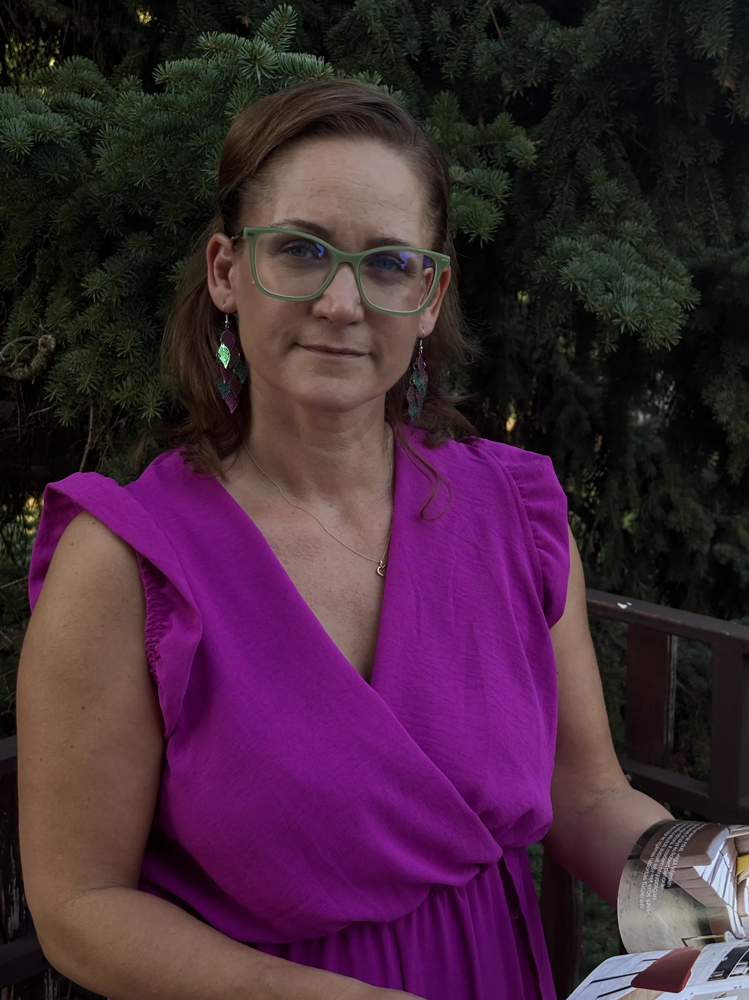
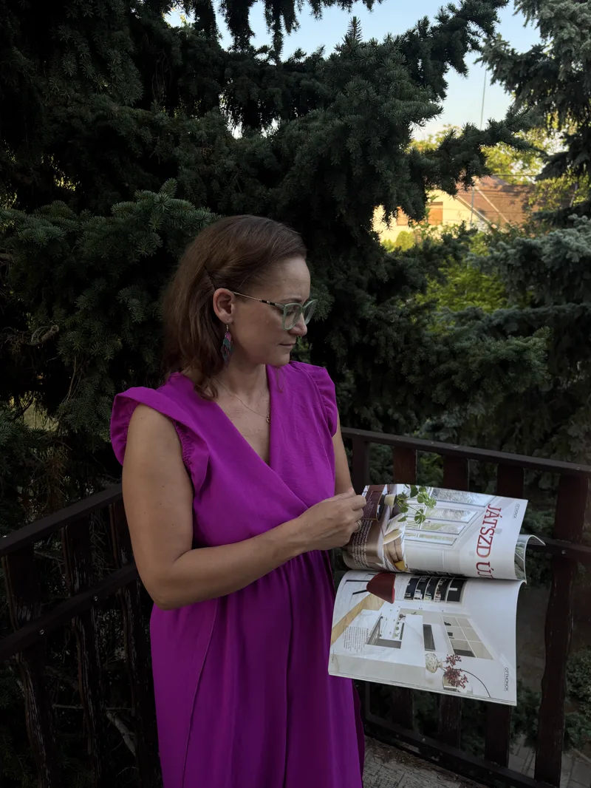
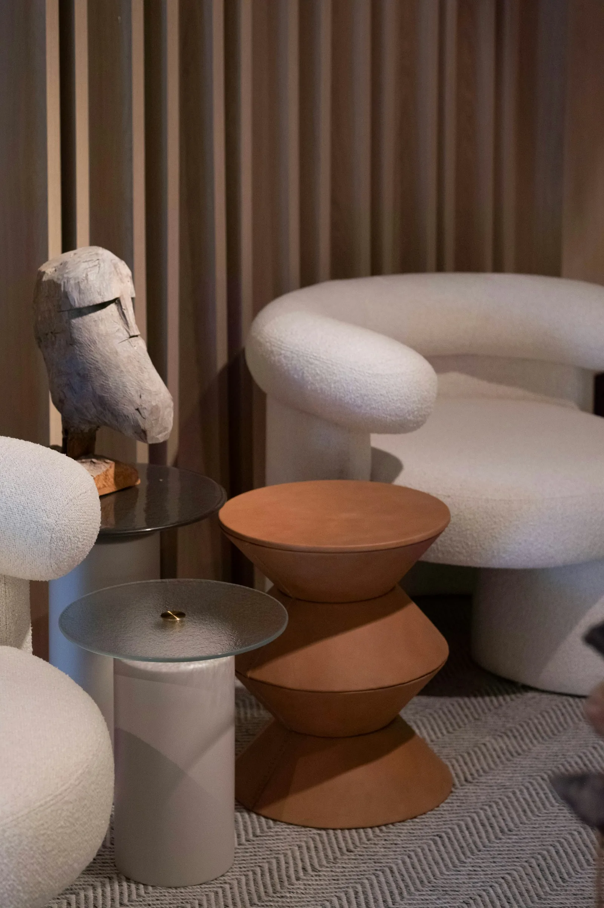
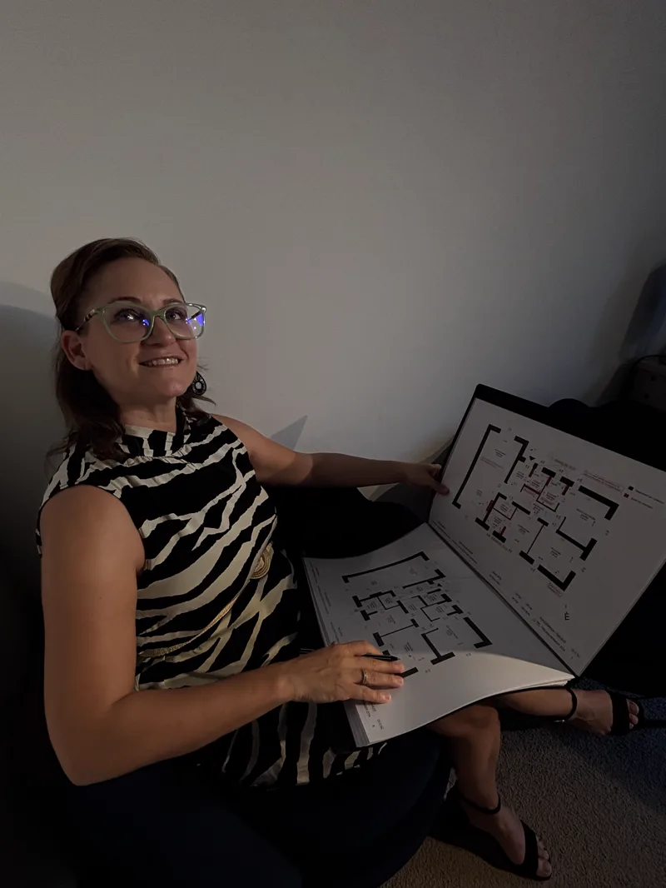
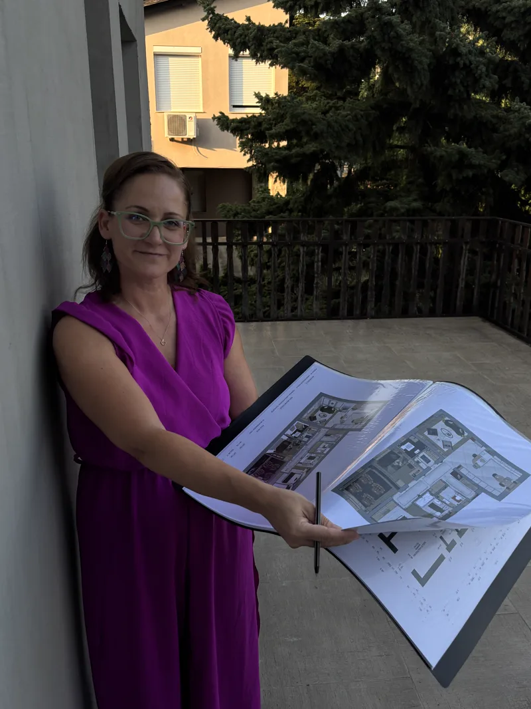
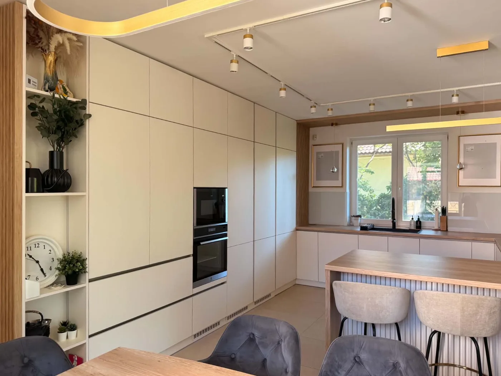

A részlet, ahol a tér otthonná válik.
Freund-Hernády Zita vagyok, lakberendező és 3D látványtervező. Hiszem, hogy egy otthon nem a falakról szól, hanem arról az érzésről, ahogy belépve azt mondjuk: végre itthon.

Freund-Hernády Zita vagyok.
Több mint húsz éven át a marketing világában dolgoztam, ahol kampányokat terveztem, rendezvényeket szerveztem, történeteket építettem. Ez az időszak megtanított arra, ami ma is a munkám egyik legfontosabb alapja: figyelni az emberekre, megérteni az igényeiket, és felismerni, mi befolyásolja a döntéseiket.
Ezzel párhuzamosan ingatlanfejlesztéssel is foglalkoztam. Kezdetben az motivált, hogyan lehet egy adott költségvetésből a lehető legtöbbet kihozni, később azonban egyre inkább a jól átgondolt terek, az arányok, az anyagok és a design váltak a projektjeim középpontjává. Az itt szerzett tapasztalatok és sikerek végül arra ösztönöztek, hogy hivatást váltsak.
2023-ban lakberendezői és 3D látványtervezői képesítést szereztem, és azóta teljes mértékben annak szentelem a munkámat, hogy olyan enteriőröket alkossak, amelyek egyszerre szépek, funkcionálisak és személyre szabottak.
A marketinges szemlélet azonban ma is meghatározó része annak, ahogyan tervezek. Hiszem, hogy egy jól működő otthon nem csupán esztétikus, hanem az ott élők életmódjára, szokásaira és igényeire épül. Éppen ezért számomra a tervezés sosem pusztán a négyzetméterekről vagy a bútorok elrendezéséről szól, hanem arról, hogy olyan tereket hozzak létre, amelyek valóban támogatják a mindennapokat, és örömet adnak azoknak, akik használják őket.
Freund-Hernády Zitalakberendező · 3D látványtervező


„A jó tér nem hivalkodik. Egyszerűen működik, és jó benne élni."
Freund-Hernády Zita
A marketing megtanított arra, hogyan figyeljek az emberre. A tervezés megadta a teret, ahol ennek értelme van.
Mivel minden projektet személyesen én kísérek végig, a teljes tervezési folyamat egy kézben marad. Ennek köszönhetően a koncepciótól az utolsó részletig minden döntés összhangban van egymással, így a végeredmény egységes, átgondolt és valóban személyre szabott lesz.



A stúdió munkáibólNéhány alapelv, amely minden munkámat végigkíséri.
- Az ember áll a középpontban. A tervezés nem a saját stílusomról szól, hanem arról, hogy olyan teret hozzak létre, amely valóban illik azokhoz, akik használni fogják.
- A jól átgondolt alaprajz a siker kulcsa. Egy jó elrendezés nem a négyzetméterek számán múlik, hanem azon, hogy a tér hogyan működik a mindennapokban.
- Döntések bizonytalanság helyett. A fotorealisztikus 3D látványtervek segítségével már a kivitelezés előtt pontos képet kaphat a kész enteriőrről.
- Egy kézben, az első ötlettől a végső részletekig. A teljes tervezési folyamatot személyesen kísérem végig, ezért minden részlet összhangban marad.
A megfelelő eszközök a legjobb eredményért.
A jó terv nemcsak látványos, hanem pontosan megvalósítható is. Ezért olyan professzionális szoftvereket használok, amelyek egyszerre biztosítják a műszaki pontosságot és a valósághű megjelenítést.
- ArchiCAD & Archline. A pontos alaprajzok, kiviteli tervek és részletes, méretezett dokumentáció elkészítéséhez.
- D5 Render. Élethű fényekkel, anyagokkal és hangulattal készülő fotorealisztikus látványtervek.
- Cinema 4D + Corona Renderer. A legmagasabb vizuális minőséget igénylő projektekhez.
- AI-alapú utómunka. A végső finomításokhoz, hogy a képek még természetesebbek és részletgazdagabbak legyenek.
Minden otthonnak megvan a maga története.
Egy jó otthon nemcsak szép, hanem személyes is. Ismerkedjünk meg egy kávé mellett, találjuk meg együtt azt a történetet, amelyet az Ön otthona mesél. Az első konzultáció ingyenes és kötelezettségmentes, pont annyi idő, hogy megismerjük egymást, és megalapozzuk a bizalmat.